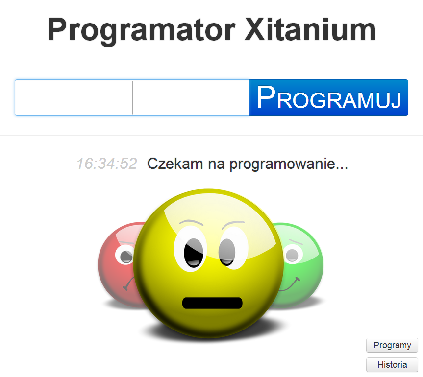
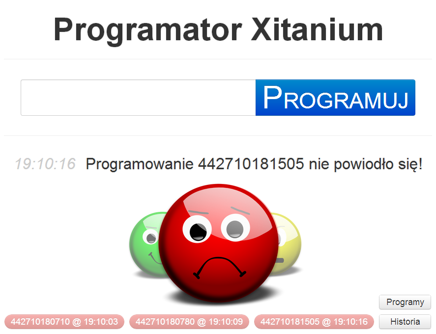
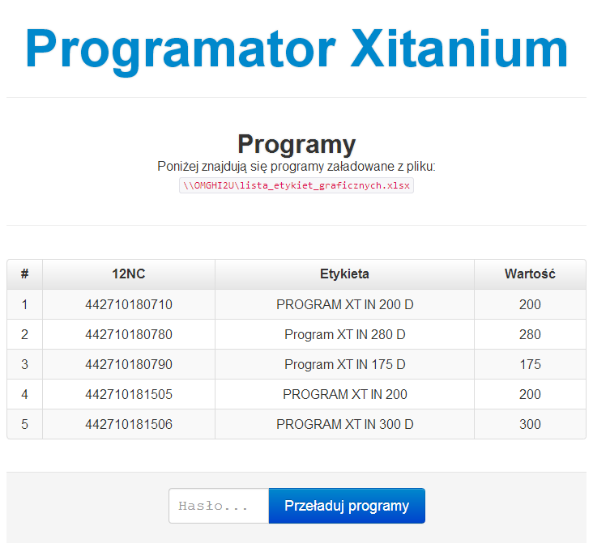
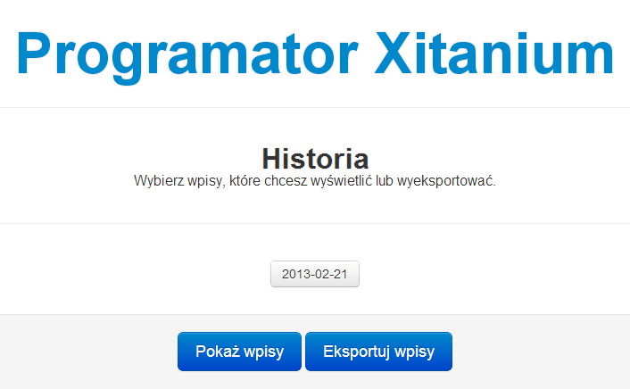
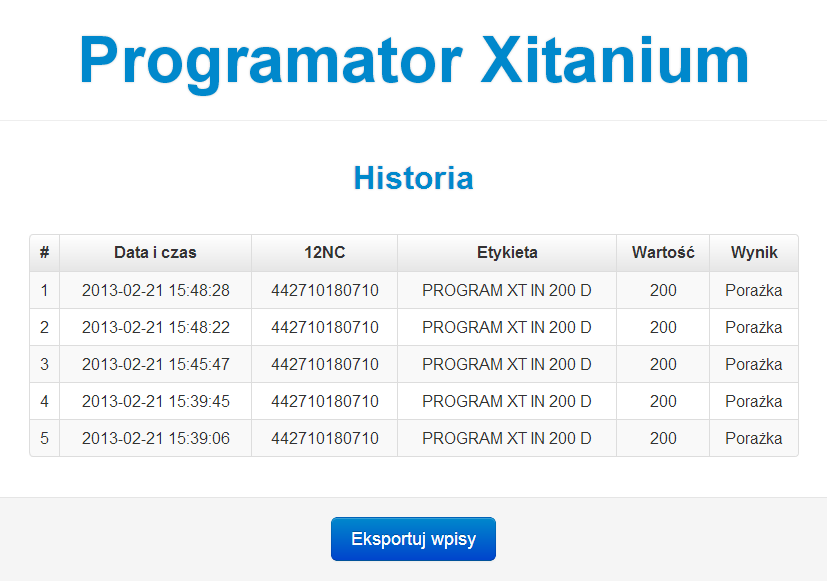
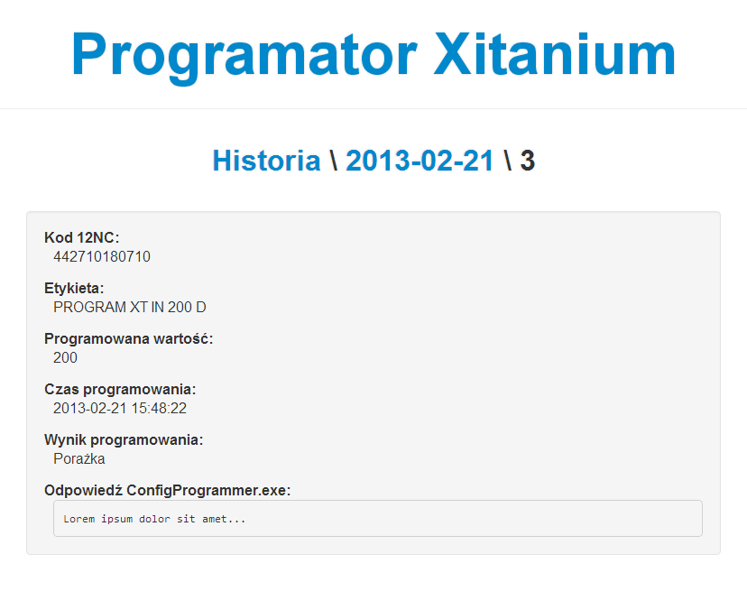

Walkner Xiconf
Wstęp
Niniejszy dokument stanowi dokumentację użytkownika dla aplikacji Walkner Xiconf.
Uruchomienie aplikacji odbywa się poprzez wpisanie przez użytkownika adresu IP i portu serwera w przeglądarce internetowej. Dane te różnią się w zależności od tego, z jakiego komputera użytkownik chce otworzyć aplikację.
Do otwarcia aplikacji na komputerze, na którym znajduje się serwer aplikacji należy wejść na adres http://localhost:1337/ lub http://127.0.0.1:1337/.
Do aplikacji można także wejść z innego komputera. W tym celu należy znać adres IP
komputera, na którym uruchomiony jest serwer aplikacji oraz port na jakim nasłuchuje
na żądania (domyślnie 1337). W celu poznania portu, należy skontaktować
się z osobą, która konfigurowała serwer aplikacji. Aby poznać adres IP
komputera należy skontaktować się z administratorem sieci lub na komputerze z serwerem
aplikacji wpisać w linii poleceń:
ipconfig /all
Na przykład, dla adresu IP 192.168.1.100, musimy wpisać w przeglądarkę
adres http://192.168.1.100:1337/.
Wymagania
Do poprawnego korzystania z aplikacji, użytkownik musi mieć zainstalowaną jedną z popularnych, aktualnych przeglądarek internetowych.


Programowanie

Ekran programowanie
Na ekranie programowania znajdują się:
- pole kodu 12NC oraz przycisk programowania,
- informacja o aktualnym stanie programatora w postaci krótkiej wiadomości oraz obrazów "buziek",
- pasek ostatnio wykonanych programowań,
- przycisk przekierowujący do historii,
- przycisk przekierowujący do listy aktualnie załadowanych programów.
Programator może w danej chwili znajdować się w jednym z czterech stanów:
- Czekam na programowanie - stan, w którym programator znajduje się przed uruchomieniem pierwszego programowania od startu serwera aplikacji. Stan ten obrazuje buźka żółta.
- Programuję - stan, w którym programator znajduje się po kliknięciu przycisku , aż do momentu ukończenia programowania (tzn. przejścia do stanu Programowanie udane lub do stanu Programowanie nieudane). Znajdując się w tym stanie, nie można przeprowadzać innego programowania (pole kodu 12NC i przycisk programowania są zablokowane). Stan ten obrazuje buźka żółta.
- Programowanie udane - stan, w którym programator znajduje się po udanym programowaniu. Znajdując się w tym stanie, można uruchomić kolejne programowanie. Stan ten obrazuje buźka zielona.
- Programowanie nieudane - stan, w którym programator znajduje się po nieudanym programowaniu. Znajdując się w tym stanie, można uruchomić kolejne programowanie. Stan ten obrazuje buźka czerwona.
Czekam na programowanie/Programuję
Programowanie udane
Programowanie nieudane
Programowanie rozpoczyna się po wpisaniu kodu 12NC i wciśnięciu przycisku Enter lub . Kod 12NC musi składać się z 12 cyfr. W przeciwym wypadku wartość pola zostanie wyczyszczona i programowanie nie zostanie rozpoczęte.
Po wysłaniu poprawnego kodu 12NC do serwera aplikacji, ten sprawdzi, czy
taki kod istnieje na aktualnej liście programów. Jeżeli nie istnieje,
do użytkownika zostanie zwrócony błąd z odpowiednim komunikatem.
Jeżeli istnieje, odczytana zostanie etykieta oraz wartość przypisana do
danego kodu 12NC, a następnie uruchomiony zostanie program ConfigProgrammer.exe
z odpowiednimi parametrami. Na koniec, odczytany zostanie wynik zwrócony przez
ConfigProgrammer.exe i na jego podstawie podjęta zostanie decyzja
czy programowanie udało się czy nie. Serwer aplikacji informuje użytkownika
o podjętej decyzji i w między czasie zapisuje to programowanie jako nowy
wpis w historii.

Ekran nieudanego programowania
Programy

Ekran załadowanych programów
Do ekranu programów możemy przejść klikając na przycisk znajdujący się w prawym dolnym rogu głównego ekranu aplikacji - ekranu programowania.
Na tym ekranie mamy możliwość wglądu w to jakie programy są w danym momencie załadowane i z jakiego pochodzą źródła (plik CSV lub XLSX). Możemy także wymusić przeładowanie danych poprzez wpisanie hasła przeładowania i wciśnięcie przycisku .
Aby wrócić do ekranu programatora, klikamy na nagłówek Programator Xitanium.
Historia
Wybór wpisów

Ekran wyboru wpisów z historii
Do ekranu wyboru wpisów z historii możemy przejść klikając na przycisk znajdujący się w prawym dolnym rogu głównego ekranu aplikacji - ekranu programowania.
Na tym ekranie mamy możliwość wyboru wpisów, których szczegóły chcemy wyświetlić w postaci listy lub wyeksportować do formatu CSV. Aby wybrać wpisy należy wcisnać na przycisk z datą wpisów, które nas interesują. Po zaznaczeniu jednego lub kilku dni możemy wcisnąć przycisk , aby przejść do ekranu listy wpisów lub przycisk , aby wyeksportować wybrane wpisy do formatu CSV (zobacz Eksport wybranych wpisów).
Aby wrócić do ekranu programatora, klikamy na nagłówek Programator Xitanium.
Lista wybranych wpisów

Ekran listy wybranych wpisów z historii
Do ekranu listy wybranych wpisów z historii możemy przejść wybierając wpisy na ekranie wyboru wpisów z historii i klikając przycisk .
Na tym ekranie przedstawione są wszystkie wpisy z wybranych dni w formie tabeli. Wyświetlane informacje to kolejno:
- data i czas programowania,
- kod 12NC użyty do programowania,
- etykieta oraz programowana wartość odczytane z pliku programów przy użyciu danego kodu 12NC,
- wynik programowania.
Klikając na dowolny wiersz, zostaniemy przeniesieni do ekranu szczegółów danego wpisu.
Wciskając przycisk , wpisy widoczne na ekranie w formie tabeli zostaną wyeksportowane do formatu CSV.
Aby wrócić do ekranu wyboru wpisów z historii, klikamy na nagłówek Historia.
Aby wrócić do ekranu programatora, klikamy na nagłówek Programator Xitanium.
Szczegóły wybranego wpisu

Ekran szczegółów wybranego wpisu z historii
Do ekranu szczegółów wybranego wpisu możemy przejść klikając na dany wpis w tabeli wpisów na ekranie listy wybranych wpisów lub w pasku ostatnich wpisów na ekranie programowania.
Na tym ekranie przedstawione są wszystkie zapisane informacje dotyczące danego programowania:
- kod 12NC użyty do programowania,
- etykieta oraz programowana wartość odczytane z pliku programów przy użyciu danego kodu 12NC,
- data i czas programowania,
- wynik programowania,
- odpowiedź z uruchomienia programu
ConfigProgrammer.exe.
Aby wrócić do ekranu listy wszystkich wpisów z tego samego dnia, klikamy na nagłówek z datą, np. 2013-02-21.
Aby wrócić do ekranu wyboru wpisów z historii, klikamy na nagłówek Historia.
Aby wrócić do ekranu programatora, klikamy na nagłówek Programator Xitanium.
Eksport wybranych wpisów
Eksportowanie wpisów odbywa się poprzez wybranie wpisów i kliknięcie przycisku na ekranie wyboru wpisów z historii lub kliknięcie przycisku na ekranie wybranych wpisów z historii.
Przykładowe, wyeksportowane dane wyglądają następująco:
nc;label;aoc;date;time;result
442710180710;PROGRAM XT IN 200 D;200;2013-02-21;15:48:28;0
442710180710;PROGRAM XT IN 200 D;200;2013-02-21;15:48:22;1
442710180710;PROGRAM XT IN 200 D;200;2013-02-21;15:45:47;1
442710180710;PROGRAM XT IN 200 D;200;2013-02-21;15:39:45;0
442710180710;PROGRAM XT IN 200 D;200;2013-02-21;15:39:06;1
Pierwszy wiersz zawiera nazwy kolumn.
Kolumny rozdzielone są znakiem średnika (;).
Eksportowane są następujące informacje o wybranych wpisach:
nc- kod 12NC użyty do programowania,label- etykieta odczytana z pliku programów przy użyciu danego kodu 12NC,aoc- programowana wartość odczytana z pliku programów przy użyciu danego kodu 12NC,date- data programowania,time- czas programowania,result- wynik programowania (1- programowanie powiodło się,0- programowanie nie powiodło się).